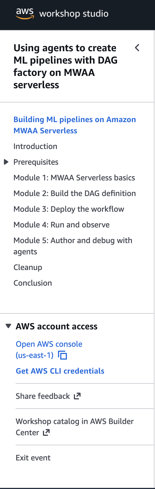

Amazon MWAA Serverless

The Challenge
Customers love Apache Airflow for orchestration…
but managing infrastructure is not
why they chose Airflow.
Customer Burden
- Provision & size schedulers, workers, databases
- Manage scaling - over-provision or risk failures
- Patch, upgrade, and secure the environment
- Handle multi-tenant access control & isolation
- Pay for idle infrastructure 24/7
Teams want to write DAGs, not manage clusters.
Introducing Amazon MWAA Serverless
GA - November 17, 2025 | Apache Airflow 3 + Python 3.12
⚡ Serverless Architecture
No provisioning. No tuning. Submit your workflow YAML and go.
💰 Pay-Per-Use
Charged only while tasks execute. Zero idle cost.
🔒 Workflow Isolation
Each workflow gets its own IAM execution role and isolated compute.
📈 Automatic Scaling
Dynamically scales to meet demand - no manual worker sizing.
MWAA Provisioned vs. MWAA Serverless
MWAA Provisioned
MWAA Serverless
Key Features
Example: YAML Workflow Definition
simples3test:
dag_id: simples3test
schedule: 0 0 * * *
tasks:
list_objects:
operator: airflow.providers.amazon.aws.operators.s3.S3ListOperator
bucket: 'amzn-s3-demo-bucket'
prefix: ''
retries: 0
create_object_list:
operator: airflow.providers.amazon.aws.operators.s3.S3CreateObjectOperator
data: '{{ ti.xcom_pull(task_ids="list_objects", key="return_value") }}'
s3_bucket: 'amzn-s3-demo-bucket'
s3_key: 'filelist.txt'
dependencies: [list_objects]PythonOperator & BashOperator
Run custom Python functions and shell scripts directly in the serverless runtime
📦 Code Bundles
- Single
.pyor.shfile - ZIP archive with modules + dependencies
- Referenced via
create-workflowAPI - Versioned independently of DAG definition
🔐 Security
- KMS encryption of code bundles at rest
- IAM execution role per workflow
- No internet access by default (S3, ECR, CW only)
- VPC option for custom network policies
🛠 Use Cases
- ETL transformations (CSV → JSON, Parquet)
- Data quality checks & validations
- Shell-based file processing
- Lightweight ML inference pre/post-processing
Observability & Monitoring
📊 Task Logs
- All task stdout/stderr → CloudWatch Logs
- Custom log group or auto-created
- Retention policies configurable
🎨 SageMaker Unified Studio
- Visual workflow authoring & monitoring
- Manage pipelines alongside data & ML assets
- Unified build, run & observe experience
🔍 CloudTrail Auditing
- API call logging for compliance
- Who created/started/deleted workflows
- Cross-account visibility
🎯 Workflow Visibility
- MWAA Serverless Console for workflow overview
- Run history, status, task details
- CLI & API for programmatic monitoring
Visual Workflows in SageMaker Unified Studio
Thank You!
Sriram Ramarathnam
SDM, AWS Analytics
Karthik Seshadri
Sr. SDE, AWS Analytics
Questions?
Get Started
Workshop
Building ML Pipelines on MWAA Serverless
https://catalog.us-east-1.prod.workshops.aws/join?access-code=7b5e-013a7c-ca

After you log in with your email
📶 Wi-Fi Hyatt_Events / AShillcountry